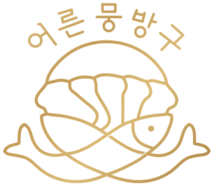

브라우저가 Canvas를 지원하지 않습니다.

행운 구슬 뽑기
시작하기
어른뭉방구
행운 구슬 뽑기 · 작은 우연을 모으는 곳
추첨을 준비하고 있어요
오프라인 놀이판
60
FPS
01
오늘의 놀이판
자개 핀 보드
작은 장애물 사이로
드래그로 이동
휠 · 핀치로 확대
F
선두 추적
추첨 설정
6
3
곧 추첨을 시작합니다
오늘의 행운이 도착했습니다
행운의 주인공
조개와 햇살 사이로, 오늘의 행운이 굴러왔습니다.
SEED
TIME
최종 순위
전체 순위 보기
같은 멤버로 다시 섞기
다시 설정하기
구슬의 출발부터 도착까지, 물리가 정하는 행운.